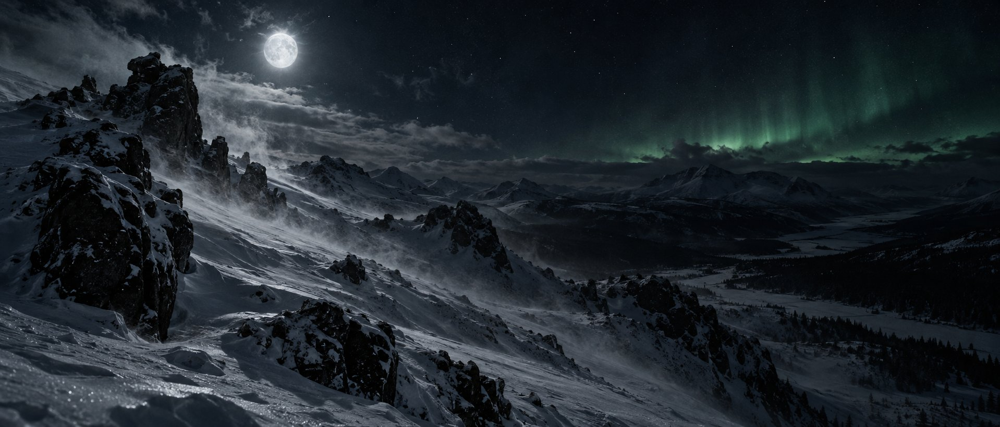
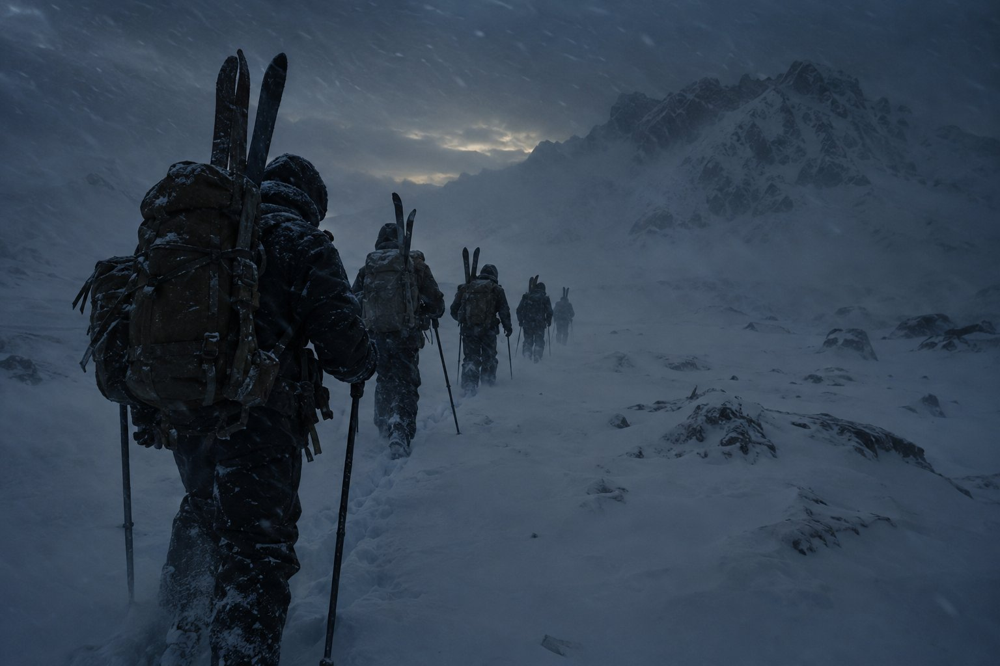
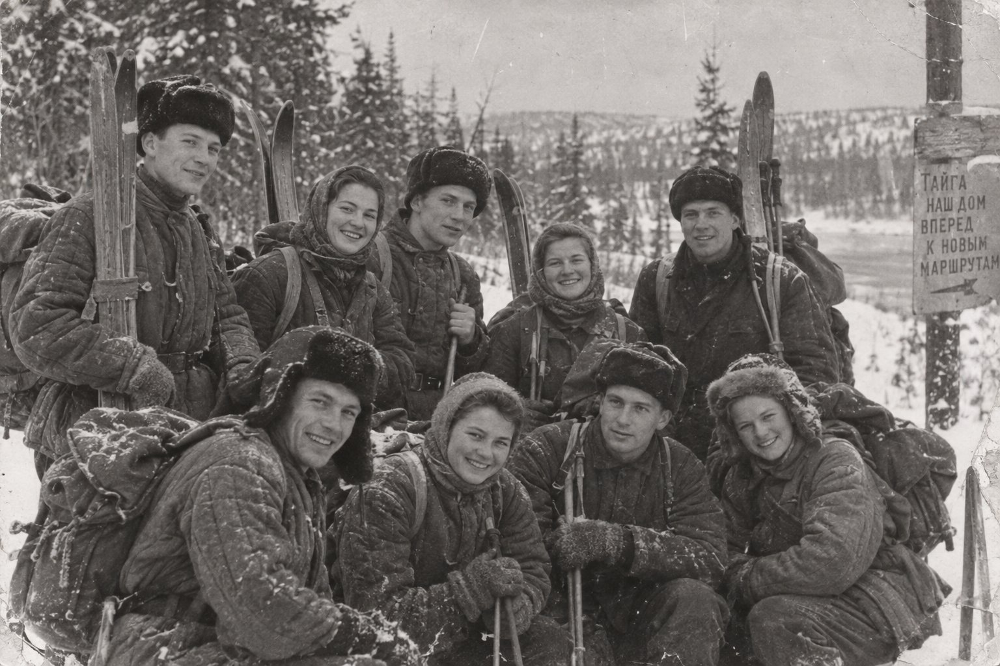
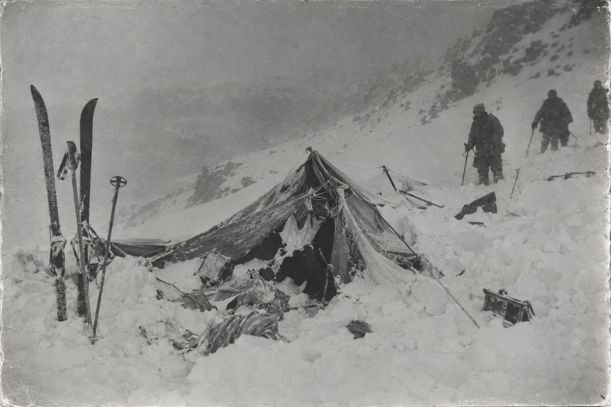
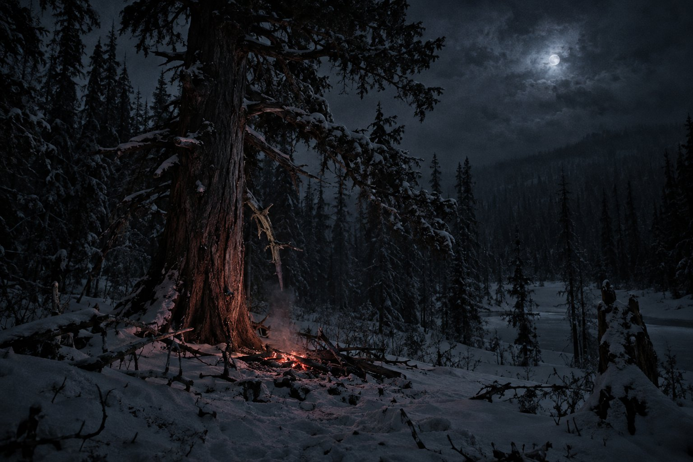
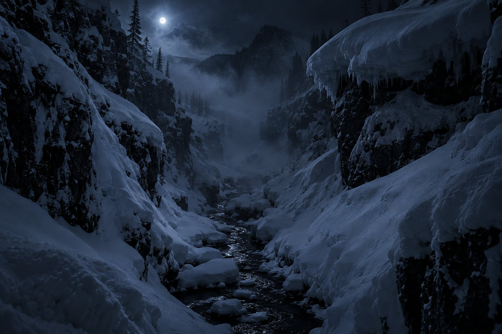
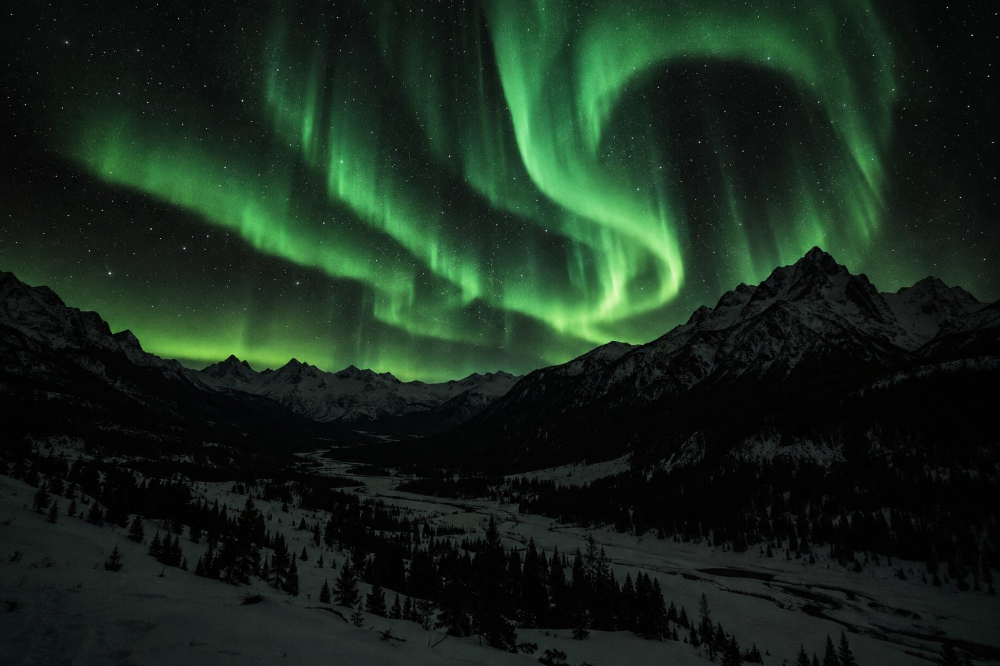

Night of February 1–2
DYATLOV
PASS
Nine hikers walked up the slope — and never came back. A tent slashed open from the inside. Barefoot tracks in thirty below. A mystery sixty-seven years old.
In January 1959, ten young hikers from the Ural Polytechnic Institute set out on a ski expedition of the highest difficulty grade — three hundred and fifty kilometres through the blinding whiteness of the Northern Urals. None of the nine ever came home.
The group was led by 23-year-old fifth-year student Igor Dyatlov — an experienced hiker who gathered friends and acquaintances around him. The route was difficult but not insane: the Soviet hiking school had passed dozens of such expeditions. The goal was Mount Otorten, whose Mansi name sounds ominous: «Don't go there», «The Mountain of Winds».
On January 28, Yuri Yudin dropped off the route due to illness. He said goodbye to the others at the edge of the forest, not knowing that he was seeing them for the last time — and that this would save his life.
- Sverdlovskstart, Jan 23
- Ivdelthe last train
- Vizhaythe last lodging
- 2nd Severnyabandoned settlement
- The Passelevation 1079 m
- Otortengoal · never reached

Auspiya Valley
«We follow the deer trail. We met deer — the herd vanished into the fog»
Frame from the group diary · January 1959
Nine days
to silence
Every night the hikers recorded their route and mileage. The diaries break off on January 31 — one day before death.
- January 23
Departure from Sverdlovsk
Ten hikers with backpacks and skis board train No. 622. In the vestibule — a guitar, laughter, plans for the «Tourist's Beacon» badge.
- January 25
Ivdel — Vizhay
The town of Ivdel, then a bus to the settlement of Vizhay. The last night under a roof, the last city shower.
- January 26
The last house
A night in the abandoned settlement of Second Severny. In the morning — horse-drawn sledges to the Lozva River. Beyond that — only snow.
- January 27
Onto the ski trail
The first independent crossing — 16 km up the frozen Lozva. In the evening, the first diary entries by candlelight.
- January 28
One turns back
Yuri Yudin cannot go on: his joints ache. He turns back. The nine continue up the Auspiya River.
- January 31
Reaching the pass
The group emerges from the forest. On the slope they set up a cache — storing part of their food and gear for the return trip.
- February 1
Wall of blizzard
A late start, wind and snowstorm. Having climbed over the pass, the group for some reason does not descend to the forest, but pitches the tent on the bare slope of Kholat Syakhl.
- February 1–2
Night. 1079 meters.
Something happens around midnight. The tent is slashed open from the inside — and in whatever clothes they had, barefoot in the blizzard, all nine walk down into the darkness. No one ever sees them alive again.
Nine
names
Students and graduates of UPI. The youngest was twenty, the oldest thirty-seven. Each had tickets home, letters, plans for spring.

Yuri Yudin · 21
Left the route on January 28 — the only survivor
«I turned around, waved to them. And I never saw them again.»
The night that
gives no answers
…the cause of the hikers' deaths was an elemental force that people were powerless to overcome

Evidence #1
The tent. February 26, 1959

1.5 km below
The cedar. Where the tracks end
What the searchers found · case files

May 4–5, 1959
The ravine by the stream. Here, under four meters of snow, the mystery lay deepest of all.

Why did nine experienced hikers run out into the cold?
No single version agrees with another on every point. Perhaps that is why the pass keeps calling — not to hikers, but to those who seek an answer.
drag the film sideways
No one knows what happened that night.
Only nine know — and they are silent.
The group was buried in Sverdlovsk, at the Mikhaylovskoye Cemetery — in closed coffins, under the howl of a February blizzard. Ever since, every year, people who never knew them but remember them climb the slope of Kholat Syakhl.
New investigation
In 2020 the prosecutor's office closed the case for the fourth time: «avalanche.» But relatives, researchers, and the 1079-meter snow slope never agreed with that conclusion.